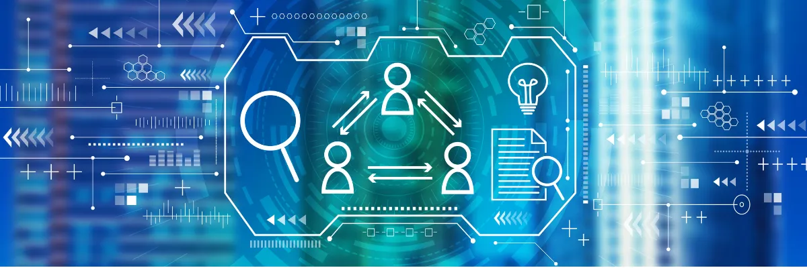

Log something crazy, but intresting.

What are Nulled WordPress Themes and Plugins?
Date:
Nulled themes and plugins are free copies of the premium paid version. Either a code is injected or removed from their core to make them stop asking for license keys. Morally and technically incorrect but legally valid. WordPress itself is licensed under GPL, allowing end-users to run, study, share, and modify the software. Unwantedly the themes and plugins have to follow suit.
If you ever buy a premium theme or plugin you will find that they all are the same license. This is the reason why null themes and plugins are available. They are not cracked but modified so that do not behave in the same way originals do.
What is a GPL?
General Public License is a type of license used to keep software free and Open-Source for general use.
Cracked vs Nulled
Cracking is a process where you have to modify the software which is not under the GPL. A very good example is copies of Microsoft Windows, Office and Adobe that are pre-activated. Plus you download them from some third-party website. This type of software poses a serious threat and should be avoided at any cost.
Cracked software has the potential not only to infect your system but also to have legal implications if caught.
Whereas nulled software is one which is modified because you are allowed in doing so under GPL. The only thing you should be aware of is not to violate trademarks like their logos and codes for selling the modified version.
The nulled version if not procured from the trusted correct source can also be a disaster.
Is it legal to use Null WordPress Theme or Plugin
Yes, it is legal to use Null WordPress themes or plugins but please do read their licenses before you use it. Times there can be clubbed items such as fonts, images, or logos that do not fall under the GPL. When using a nulled version the original creator might not be ready to share those licenses with you.
How is it done?
In the installation files like the function.php, there are certain callbacks and hooks that keep on asking you to enter a key. You just need to edit them or add a line of code. All themes and plugins are built differently and modification happens differently. You seriously require a coder who would understand the logic that runs in the code.
These are no longer called untouched versions. Yes, there are some premium plugins and themes that do not require modifications. Confused? Let's look at the process of what actually happens in the nulled world.
The Process and Nulled World
There are plenty of places where you can buy premium themes and plugins from the original creator. Let's assume that place is ThemeForest (one of my favourite places to buy premium themes and plugins), now the creator is the seller and I buy the theme. I am now the first party, I will then modify the files and pass them to you. You are now the second party the chain does not stop here you further give it to your friend's third party.
With the modified version I, you or your friend anyone can start a website and start selling the nulled version. There is nothing wrong with it under the GPL license you can. There are plenty of sites doing exactly the same.
Then why do most blogs and creators say these nulled versions should be avoided?
Here is the twist all of the GPL sites on the web state that they buy their version from the seller directly. They are the first party but there is no way to confirm that. Look at it this way Site A is selling a null version for $4.50 and a person buys it and starts Site B and puts it at $5. This goes on and on, no one knows where the original file came from.
When you buy and use a nulled theme there is a RISK that you take. If you look at the GPL selling sites you will not be able to find out who is the seller or where he/she is from. If you don't understand the codes then anything can happen. If the nulled file is coming from a bad element then scripts can make your site venerable to hacks or attacks.
You will not get support from the original creator because there is no link between you and him.
Then what happens in the nulled world the original creators are also aware so in the core files, they leave time bombs which get executed after a certain time period.
Do nulled themes and plugins have an effect on SEO?
No, nulled themes will not affect SEO. Null themes have the same functions and same codes so there is no problem with the SEO. But on the other hand, if a time bomb gets executed or security venerability is found then that will affect your users.
With the nulled theme, you should not be worried about SEO. You should be worried about the security of yourself and your users.
I don't know what themes or plugins you are looking at but the risk will keep on getting higher if on your site users put in their personal details like usernames and passwords.
Reasons for using Null themes and plugins
I am personally unable to find reasons why would one use null themes or plugins. Cost can be a good reason, people who are running a very small budget would be looking for null themes. One theme cost about $59 and if you have 10 sites then that can cost you $590 that's high. That is where you start looking for a way out.
Where to buy Nulled themes and plugins
Any place where you can verify the first party and they will extend the support from the creator. You and your friend can pool in and buy so that you know that the file is not infected. You can also do a group buy, there are plenty of themes and plugins now available for use on multiple sites.
If you can not verify the person or know if he is the first or not, then you should not buy or use that null version.
Reasons for not using a nulled version
The biggest is the support and timely update from the original creator. Updates are important as WordPress upgrades the theme and plugins all need to update. Another big advantage is newly added features that get implemented by the creator. If you are on the null version you will not get these.
Sites when not updated to the latest version are then in the critical state. You would never know the update also has a security patch. Your site will be venerable to bad elements.
Support the creator so that you can get further support and additional features for your site.
Conclusion
Always try to buy a clean original version of a theme or a plugin preferably from the original creator. Modifying the GPL version is not legally wrong but done by a bad element can lead you and your site into the danger zone.
Themes have an effect on SEO and should not be changed too often. So try to buy where you can get long-term support. You can even self-develop themes for your site. See creators put a lot of time and effort into creating software for you and when you support them you get things in return. Then some people will null their effort to make money themself is morally incorrect. Your going ahead and supporting that action is alarming.
Whenever you look for a null theme or plugin your first concern should be safety and security.
|
Share this: |


|

|

|

|

|